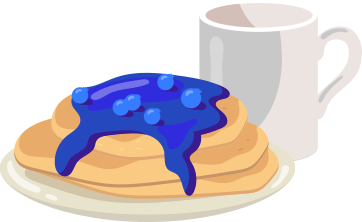

Comparatif
Télétravavail VS Au bureau
Préparation pour aller au travail
S’organiser pour aller au travail nécessite toute une préparation: temps de trajet, transports ou essence, météo, mouvements sociaux ... Autant de facteurs qui peuvent aisément vous mettre en retard et être source de stress lors de tout le trajet si vous décidez de tout de même l’entreprendre, ou à cause des éventuelles répercussion si vous décidez d’abandonner...
Réveil à 8h30
TélétravailEn télétravail, la plupart des gens se réveillent 1h à 30min avant le début de leur travail. Une telle organisation permet un meilleur temps de sommeil ainsi qu’une douce préparation au travail sans avoir peur d’être en retard.
De plus, même avec une panne de réveil qui peut arriver à tous, votre temps de retard ne s’élèvera qu’à quelques minutes ! En prime, vous avez en plus le temps de prendre un petit-déjeuner ce qui devient de plus en plus rare chez les travailleurs.
Réveil à 7h00
Au bureauC’est l’heure de réveil des français en moyenne pour un travail débutant à 9h00. Le temps qui vient ici s’ajouter aux 1h de préparations corresponds au temps de trajet. En transport public ou personnel, celui-ci peut s’élever de 30min jusqu’à 2h !
Certaines personnes viennent de très loin pour travailler, et ces transports sont un coût qui vient s’ajouter aux nombreuses dépenses du quotidien, en essence, électricité ou bien en abonnement aux transports.
